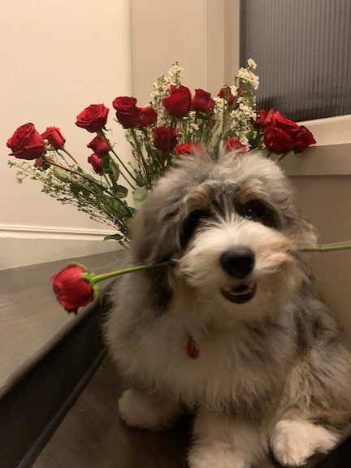

The Life of Logan, the Bernedoodle!
What does Logan do?
Logan is a rubunctious, 6 month old Bernedoodle. Logan joined the Mercer family 3 monthes ago. He is newly potty trained, but he is still learning to not steal peoples' napkins! Logan also loves giving and recieving kisses! He is often very hyper and loves to play. Below is a list of a few of his favorite ways to exercise! And a link to his favorite play spots.
- Play with chew toys!
- Windsprints on the soccer field!
- Basketball!
- Eating puffy jackets!
Logan's Favorite Spots
What does Logan look like and why?
Logan is mixed with a 105lbs Bernese Mountain Dog and a 15lbs poodle. He has lots of grey fluff with black dots that requires A LOT of brushing.
Photos of Logan!
What does Logan eat?
Logan is always hungry! He loves meats, crackers, and even the ocasional vegetable! Below is a link to the kibble he eats and a lisit of his favorite snacks!
Logan's Food!
Thank you!
